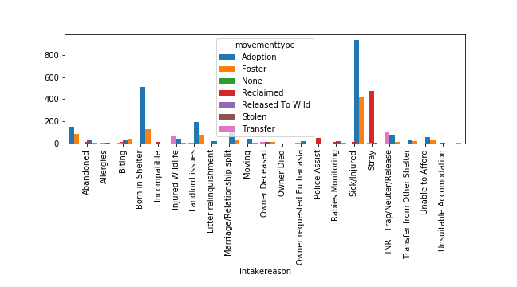

What happens to the animals once they've been taken in?
This chart explores the relationship between the animal's intake reason and its outcome.
Because strays dominate the overall shelter population, it's unsurprising that they also make up the largest percentage of all possible outcome paths. Strays appear to be the source for the overwhelming majority of adoptions.
While animals that are surrendered for biting or other behavioral issues are sometimes reclaimed, there are no instances of an animal being reclaimed after being surrendered due to moving, landlord issues, or relationship splits. This suggests that the owner's living situation can become more of an obstacle to pet ownership than the behavior of the pet.
Over 75% of the animals taken in were either adopted, transfered (to a rescue group or a shelter) or placed in foster homes. Fewer than 15% were reclaimed by their owners. A small number (105 animals, of a total of 4117 intakes) were euthanized.
Because cats and dogs make up the overwhelming majority of shelter animals in this facility, it isn't surprisng that they make up the majority of animals that are euthanized. Other animal groups combine for a fraction of the euthanasia numbers as cats and dogs.